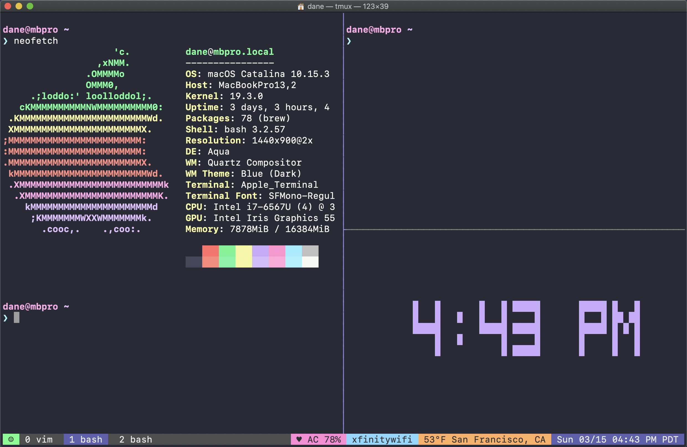
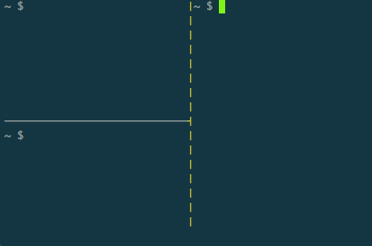
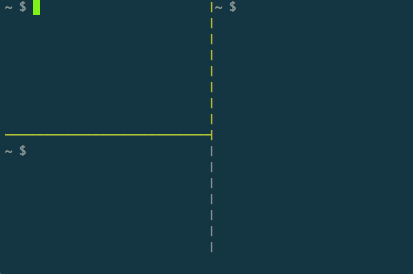
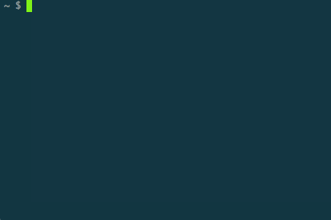

如何灵巧的使用 Tmux 工具呢？
我们之前介绍过一个终端复用工具 tmux， 它可以让我们在终端里面建立很多回话，这样的话工具区就不会丢失，而且可以在不同的工作区处理不用的事情，互不干涉。但是，tmux 还存在一个问题，就是一旦服务重启的时候或者打开的 tmux 会话过多导致其挂了，此时我们之前创建的所有工作区都会丢失，需要重头开始创建。

1. TPM 插件管理器
Tmux Plugin Manager installs and loads tmux plugins.
面对上面所提及到的问题，我们这里介绍的 tmux 插件组 tmux-plugins 可以很好的帮助我们进行 tmux 会话的保存、恢复的问题。这样，一旦我们工作的机器重启或者工具自身挂了的情况下，我们也可以很好的恢复之前的本地工作区。防止重复的工作再来一遍，更何况再来一遍也未必比之前好。
tmux-plugins 插件组中包含很多个插件，但是都用通过 tpm 这个插件管理工具进行控制的，所以第一步是来安装和配置这个工具，然后开始改善我们的 tmux 工具。安装步骤如下所示：
- [1] 安装 TPM 工具
# 下载TPM代码到本地tmux插件目录中
$ git clone https://github.com/tmux-plugins/tpm ~/.tmux/plugins/tpm
- [2] 配置 TPM 工具
# 将如下配置写入~/.tmux.conf配置文件中
$ cat ~/.tmux.conf
# List of plugins
set -g @plugin 'tmux-plugins/tpm'
# Other examples:
# set -g @plugin 'github_username/plugin_name'
# set -g @plugin 'git@github.com:user/plugin'
# set -g @plugin 'git@bitbucket.com:user/plugin'
# Initialize TMUX plugin manager (keep this line at the very bottom of tmux.conf)
run '~/.tmux/plugins/tpm/tpm'
- [3] 重新加载 Tmux 配置
# type this in terminal if tmux is already running
$ tmux source ~/.tmux.conf
- [4] 安装卸载插件操作
| 编号 | 快捷键 | 对应功能说明 |
|---|---|---|
| 1 | prefix + I |
安装配置文件中列出的插件(~/.tmux.conf) |
| 2 | prefix + U |
卸载配置文件中列出的插件(~/.tmux.conf) |
| 3 | prefix + alt + u |
移除并删除在配置文件没有列出的插件 |
# 安装插件步骤(prefix+I)
- Add new plugin to ~/.tmux.conf with set -g @plugin '...'
- Press prefix + I (capital i, as in Install) to fetch the plugin.
# 卸载插件步骤(prefix+U)
- Remove (or comment out) plugin from the list.
- Press prefix + alt + u (lowercase u as in uninstall) to remove the plugin.
2. Tmux 常用默认配置
A set of tmux options that should be acceptable to everyone.
- [1] 默认选项
# utf8 is on
set -g utf8 on
set -g status-utf8 on
# address vim mode switching delay (http://superuser.com/a/252717/65504)
set -s escape-time 0
# increase scrollback buffer size
set -g history-limit 50000
# tmux messages are displayed for 4 seconds
set -g display-time 4000
# refresh 'status-left' and 'status-right' more often
set -g status-interval 5
# set only on OS X where it's required
set -g default-command "reattach-to-user-namespace -l $SHELL"
# upgrade $TERM
set -g default-terminal "screen-256color"
# emacs key bindings in tmux command prompt (prefix + :) are better than
# vi keys, even for vim users
set -g status-keys emacs
# focus events enabled for terminals that support them
set -g focus-events on
# super useful when using "grouped sessions" and multi-monitor setup
setw -g aggressive-resize on
- [2] 默认绑定键
# easier and faster switching between next/prev window
bind C-p previous-window
bind C-n next-window
# source .tmux.conf as suggested in `man tmux`
bind R source-file '~/.tmux.conf'
# if prefix is 'C-a'
bind C-a send-prefix
bind a last-window
3. Tmux 复制模式配置
Tmux plugin for copying to system clipboard.
# 更改复制模式的默认行为为熟悉的vi风格
# tmux中复制模式通常使用复制模式的步骤如下:
# 1. 输入 <[> 进入复制模式
# 2. 按下 <空格键> 开始复制，移动光标选择复制区域
# 3. 按下 <回车键> 复制选中文本并退出复制模式
# 4. 按下 <]> 粘贴文本
# 开启vi风格后，支持vi的C-d、C-u、hjkl等快捷键
setw -g mode-keys vi
# 存在于tmux进程中的buffer缓存，虽然可以在会话间共享，但不能直接与系统粘贴板共享，不免有些遗憾
# 我们都知道，Mac自带pbcopy和pbpaste命令，分别用于复制和粘贴，但在tmux命令中它们却不能正常运行
# 我们可以使用一个包装程序reattach-to-user-namespace来重新连接到合适的命名空间，然后执行访问用户级命名空间的粘贴板服务
# 加载复制插件
# 1. 将命令行文本复制到剪贴板 <prefix+y>
# 2. 将当前面板的工作目录复制到剪贴板 <prefix+Y>
set -g @plugin 'tmux-plugins/tmux-yank'
# 配置开启剪贴板功能
set -g set-clipboard on
# set-option -g default-command "reattach-to-user-namespace -l $SHELL"
4. Tmux 保存恢复会话
Persists tmux environment across system restarts.
- [1] 快捷键
| 编号 | 快捷键 | 对应功能说明 |
|---|---|---|
| 1 | prefix + Ctrl-s |
保存会话 |
| 2 | prefix + Ctrl-r |
重载会话 |
- [2] 配置步骤
# tmux保存会话依赖于tmux进程，因此关机重启后会话将被清空
# 目前有resurrect和continuum两个插件可以持久保存用户会话
# 无须任何配置就能够备份tmux会话中的各种细节，包括窗口、面板的顺序、布局、工作目录，运行程序等等数据
# 1. 保存的快捷键: <prefix + Ctrl-s> tmux状态栏在保存开始
# 2. 恢复的快捷键: <prefix + Ctrl-r> tmux状态栏在恢复开始
# 保存时，tmux会话的详细信息会以文本文件的格式保存到~/.tmux/resurrect目录，恢复时则从此处读取
# 由于数据文件是明文的，因此你完全可以自由管理或者编辑这些会话状态文件，如果备份频繁记得定期清除历史备份
set -g @plugin 'tmux-plugins/tmux-resurrect'
set -g @plugin 'tmux-plugins/tmux-continuum'
# 重载vim/neovim会话
set -g @resurrect-strategy-vim 'session'
set -g @resurrect-strategy-nvim 'session'
set -g @continuum-restore 'on'
set -g @resurrect-capture-pane-contents 'on'
5. Tmux 快速搜索配置
A plugin that enhances tmux search.
- [1] 快捷键
| 编号 | 快捷键 | 对应功能说明 |
|---|---|---|
| 1 | prefix + / |
正则表达式搜索 |
| 2 | prefix + ctrl-f |
简单的文件搜索 |
| 3 | prefix + ctrl-u |
网址搜索(http/ftp/git) |
| 4 | prefix + ctrl-d |
数字搜索(digit) |
| 5 | prefix + alt-i |
IP 地址搜索 |
- [2] 配置步骤
# 其中copycat搜索插件支持正则表达式搜索/搜索结果高亮/预定义搜索
# 正则格式搜索: <prefix+/>
# 搜索结果高亮: 使用grep命令搜索且搜索不区分大小写
# 预定义的搜索:
# 1. 文件搜索 <prefix+ctrl-f>
# 2. URL搜索 <prefix+ctrl-u>
# 3. 数字搜索 <prefix+ctrl-d>
# 4. IP地址搜索 <prefix+alt-i>
# 当然可以使用n/N进行高亮选择进行一个个的跳转
set -g @plugin 'tmux-plugins/tmux-copycat'
6. Tmux 常用操作绑定
Tmux plugin for controlling panes. Adds standard pane navigation bindings.
- [1] 导航绑定键
| 编号 | 快捷键 | 对应功能说明 |
|---|---|---|
| 1 | prefix + h |
选择左侧的窗格 |
| 2 | prefix + j |
选择下方的窗格 |
| 3 | prefix + k |
选择上方的窗格 |
| 4 | prefix + l |
选择右侧的窗格 |
- [2] 调整窗格绑定键
| 编号 | 快捷键 | 对应功能说明 |
|---|---|---|
| 1 | prefix + shift + h |
调整当前窗格左侧 5 个单元格的大小 |
| 2 | prefix + shift + j |
向下调整 5 个单元格的大小 |
| 3 | prefix + shift + k |
向上调整 5 个单元格的大小 |
| 4 | prefix + shift + l |
在右侧调整 5 个单元格的大小 |
- [3] 分割窗格绑定键
| 编号 | 快捷键 | 对应功能说明 |
|---|---|---|
| 1 | prefix + | |
水平分割当前窗格 |
| 2 | prefix + - |
垂直分割当前窗格 |
| 3 | prefix + \ |
水平拆分当前窗格全宽 |
| 4 | prefix + _ |
垂直拆分当前窗格全宽 |
- [3] 交换窗口绑定键
| 编号 | 快捷键 | 对应功能说明 |
|---|---|---|
| 1 | prefix + < |
将当前窗口向左移动一个位置 |
| 2 | prefix + > |
将当前窗口向右移动一个位置 |
- [5] 配置步骤
# Add plugin to the list of TPM plugins in .tmux.conf
set -g @plugin 'tmux-plugins/tmux-pain-control'
# Hit prefix + I to fetch the plugin and source it
You should now have all pain-control bindings defined.
5. Tmux 常用插件介绍
需要了解更新的话，请直接点击这里查看
tmux-plugins!
- [1] 常用插件介绍
| 插件名称 | 对应功能特性 | 链接地址 |
|---|---|---|
tpm |
插件管理器系统 | https://github.com/tmux-plugins/tpm |
resurrect |
保存恢复会话 | https://github.com/tmux-plugins/tmux-resurrect |
continuum |
自动保存和恢复会话 | https://github.com/tmux-plugins/tmux-continuum |
copycat |
终端中快速搜索内容 | https://github.com/tmux-plugins/tmux-copycat |
urlview |
终端中搜寻URL链接 |
https://github.com/tmux-plugins/tmux-urlview |
yank |
终端便捷剪切板功能 | https://github.com/tmux-plugins/tmux-yank |
cpu |
状态栏显示CPU信息 |
https://github.com/tmux-plugins/tmux-cpu |
battery |
状态栏显示电池信息 | https://github.com/tmux-plugins/tmux-battery |
sidebar |
文件目录树 | https://github.com/tmux-plugins/tmux-sidebar |
logging |
窗口信息输出 | https://github.com/tmux-plugins/tmux-logging |
pain-control |
标准操作绑定键 | https://github.com/tmux-plugins/tmux-pain-control |
prefix-highlight |
窗口信息输出 | https://github.com/tmux-plugins/tmux-prefix-highlight |
- [2] 插件部分配置
# 插件的安装/更新/卸载
# install:<prefix+I> update:<prefix+U> remove:<prefix+alt+u>
set -g @plugin 'tmux-plugins/tpm'
# 抽出屏幕中的URL链接信息
# 在面板中显示所有URL链接地址: <prefix+p>
set -g @plugin 'tmux-plugins/tmux-urlview'
set -g @urlview-key 'p'
# 文件目录树
# 切换到侧栏的目录树: <prefix+Tab>
# 光标移动到侧边栏上: <prefix+Backspace>
set -g @plugin 'tmux-plugins/tmux-sidebar'
# 在右侧状态栏中展示电池和CPU信息
# cpu extension plugin
set -g @plugin 'tmux-plugins/tmux-cpu'
# cell extension plugin
set -g @plugin 'tmux-plugins/tmux-battery'
# show tmux prefix highlight
set -g @plugin 'tmux-plugins/tmux-prefix-highlight'
# 其他有用的插件(默认未启用)
# 1.方便进行面板切换
# set -g @plugin 'tmux-plugins/tmux-pain-control'
# set-option -g @pane_resize "5"
# 2.记录窗口信息输出
# set -g @plugin 'tmux-plugins/tmux-logging'
# 3.文件差异比较
# set -g @plugin 'jbnicolai/tmux-fpp'
# 4.用于快速打开突出显示的文件或URL
# set -g @plugin 'tmux-plugins/tmux-open'
# 5.显示网卡网速插件
# set -g @net_speed_interfaces "eth0 eth1"
# keep this line at the very bottom of tmux.conf
run '~/.tmux/plugins/tpm/tpm'
- [3] 常用技巧展示


